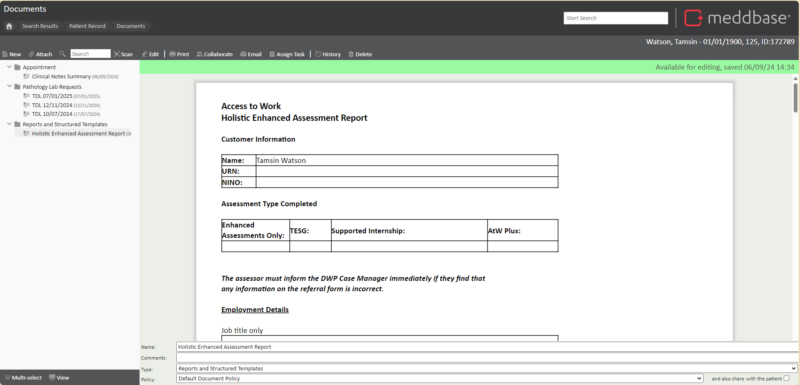
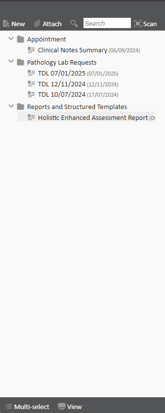
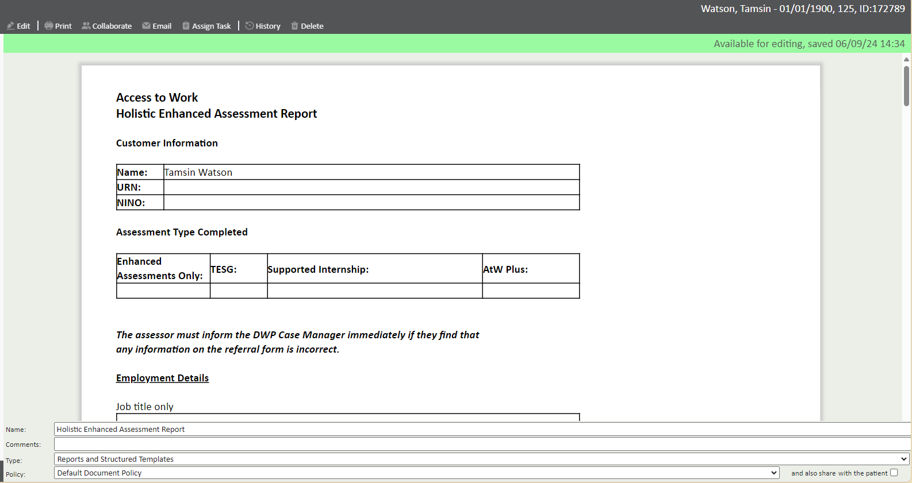
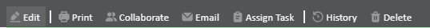
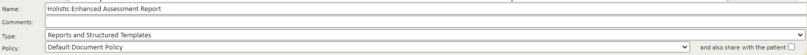

The Documents page is a central feature in Meddbase, accessible from various areas such as patient record, appointment home, clinician record, or company record pages. It provides a dedicated space for storing and managing documents related to that entity. By organising documents into a structured system with preview capabilities, security settings, and sharing options, this page supports efficient document management while maintaining control over access and visibility.
The purpose of this article is to explain how to effectively use the Documents page within Meddbase for storing, managing, and securing documents. It outlines the key features of the page.
The ‘Documents’ page (As found in the patient, clinician, appointment or company pages) can be used to store documents relating to the subject. Documents can take any format and a number of formats will allow you to preview the document rather than downloading to your device.
The documents page is primarily made up of two sections, the folder tree on the left hand side of the page and the preview window to the right.

The folder tree shows all your current documents separated into a folder structure (these folders are defined by the document ‘type’). You may change this view to a list if you prefer or even show deleted items. To do this click the ‘View’ button at the bottom of the folder tree and change the view to either ‘List’ or ‘Deleted’.
Documents are sorted into folders, known as document Types. By opening a folder and clicking on a file, depending on the type of file, a preview will load on the right-hand side.
Note: You can create a new document type folder by clicking New > Document Type. This will create a new folder which other Meddbase users can see and use to organise documents. This can also be done in the Templates tile.

The preview window is available for all file types, Meddbase text documents, PDFs, Images and Microsoft word*
*Documents that are MS word will not show formatting in the preview, only text.

The toolbar running the width of the page displays the following actions:
Previewed document actions:
When previewing a document, the following actions are available:

The final area of the documents page is the document security section shown below any previewed document. This section allows users to:
